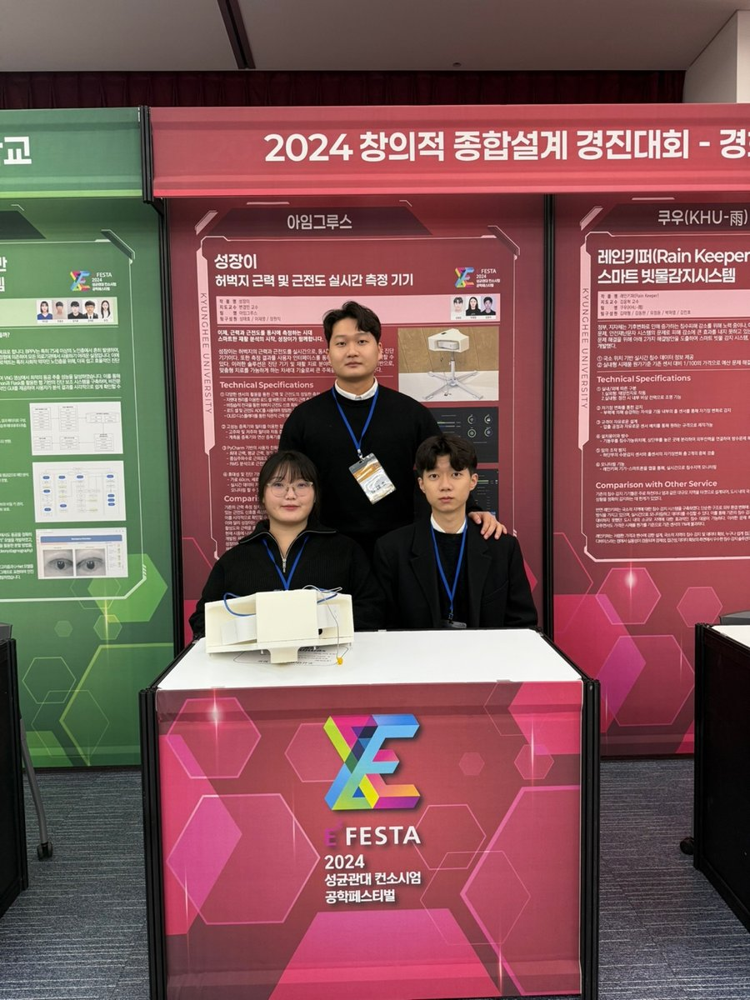

Built a mobile robot combining omnidirectional movement with active cargo-tray stabilization.전방향 이동과 적재함 기울기 보정을 결합한 운송 로봇을 제작했습니다.
Omnidirectional movement전방향 이동
Attitude control자세 제어
STM32

2024Engineering Design Competitions공학설계 경진대회
Thigh Strength & EMG Measurement근력·근전도 실시간 측정 기기
Built “Seongjang-i,” a device for real-time thigh strength and EMG measurement, and presented it at engineering design competitions.허벅지 근력과 근전도를 실시간으로 측정하는 ‘성장이’를 제작하고 공학설계 경진대회에 출품했습니다.
Excellence Award · KHU Engineering Design Competition교내 공학설계 경진대회 · 최우수상
Silver Award · SKKU Consortium성균관대 컨소시엄 · 은상
Korean Society for Engineering Education President’s Award한국공학교육학회장상
02 / EXPLORE & LEARN
Internship experiences인턴 경험
2025 / INTERNSHIP
Antibody & Molecular Biotechnology항체·분자생물학
Seoul National University서울대학교 인턴십
Participated in antibody and molecular biotechnology experiments and paper seminars. Gained experience in BCR sequence recovery workflows and PCR condition assessment.항체·분자생물학 분야의 실험과 논문 세미나에 참여했습니다. BCR 서열 회수 관련 실험과 PCR 조건 검토를 경험했습니다.
INTERNSHIP
Clinical Neuroimaging의료영상·임상 데이터
Kyung Hee University Hospital at Gangdong강동경희대학교병원 인턴십
Contributed to a collaborative MRI study on cerebral blood flow and renal function, and co-authored a paper in Chinese Medical Journal.MRI를 이용해 뇌혈류와 신장 기능의 관계를 살펴보는 공동연구에 참여했습니다. Chinese Medical Journal 논문에 공저자로 참여했습니다.
Detailed policy comparisons, simulation results, and physical robot demonstrations are in the research section.정책 비교 실험, 시뮬레이션 결과, 실제 로봇 구동 영상은 연구 페이지에 정리되어 있습니다.